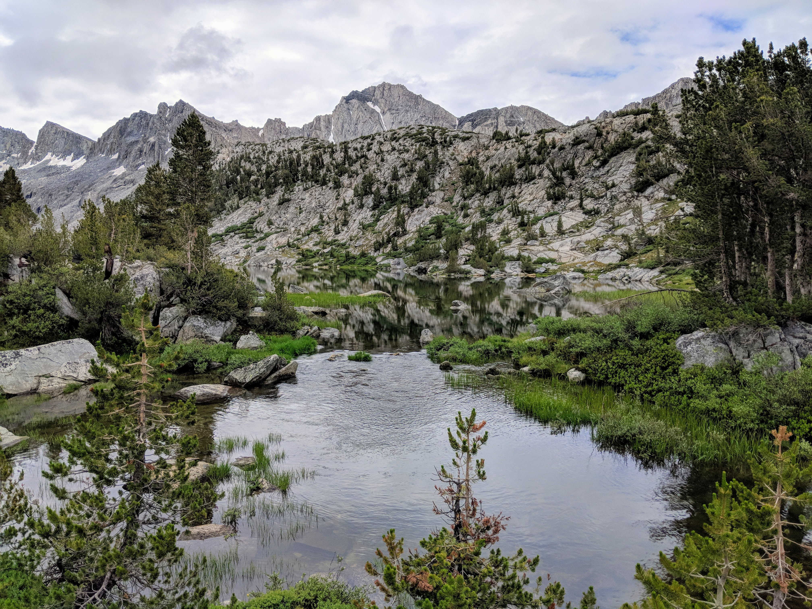
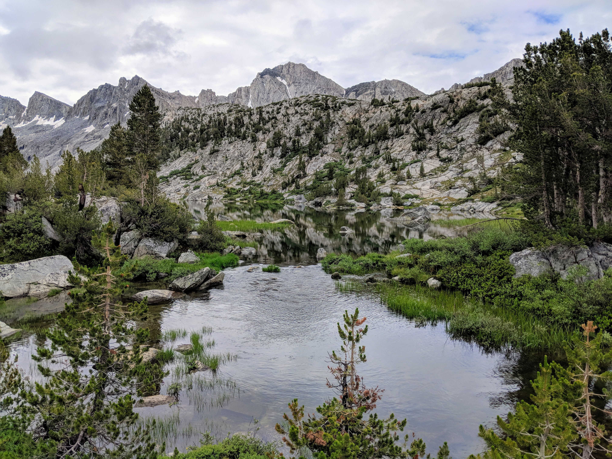

Distance
Distance Elevation
Elevation Observed Wildlife
Observed Wildlifeto
This hike is epic. Compared to my native New England hiking, this is infinitely more open. Vistas greeted us around every corner and over every pass. Gorgeous alpine lakes and meadows interupted high Sierra mountain views. If you have the stamina to keep up with this hike, it is a can't miss.
This is definitely the most epic hike I have ever done. My friend planned the whole thing and I signed up for the ride. We camped the night before at Mountain Glen Campground. Then we got our last fresh meal somewhere in Cardinal Village Resort before parking at the North Lake Hiker Parking.
Day 1 - 9.2 miles - 10 hours, 20 minutes


We got on the trail and I remember the mosquitoes being a nuisance from the start. Bug spray definitely helped and my buddy and I wore our frog togs to cover our skin. It didn’t take long for the scenery to open up to the beautiful surrounding mountains. We hiked through a cool valley passed multiple lakes before reaching Puite Pass, our highest point for the next two days. The pass was not dramatic, but it was cool for new vistas to open and to start descending into a new area.


The rest of the first day stretched. At one point, someone made an arrow of rocks and pointed us in the wrong direction. We hiked close to a mile before we realized it was the wrong way. The mistake might have fixed itself and returned us to our planned path, but we did not want to get derailed on our first day. We backtracked and continued on our intended path.

As we descended, the trees slowly and gradually returned until we were in the forests. By this time we were tired of hiking and dealing with the mosquitos. We kept looking for a place to camp, and eventually found the spot marked on the All Trails map. This ended up being the worst mosquito experience of my life. Right when we stopped they were relentless. We covered our skin using Frog Togs best we could, but it was a chore just to keep them off our hands and small amont of face that showed. We ended up eating while pacing around camp so that food could reach our mouths before the mosquitos did. We ended up retiring to our tents early. I questioned what type of hike my friend brought me on and why he made me fly across the country to be eaten alive.
Day 2 - 10.8 miles - 8 hours

The mosquitos were just as bad, if not worse in the morning. I decided to wear shorts and a short sleeves to start our hike thinking we could outrun the blood-sucking insects. I ended up using all my attention sweeping them off of my arms and legs and put my pants and jacket back on in defeat. My buddy and I were pretty miserable as we continued descending through Hutchinson Meadow.

We finally emerged from the woods and happened upon a small pool that sat next to the raging river. The sun and open air deterred the mosquitos and we ravenously stripped down, and jumped into the freezing water to rinse off our sweat and layers of bug spray. We took our time at this spot and dried off in the live-giving sun. This was a huge turning point in our hike and from here, we had a blast.


Hiking through the montane valley was so fun as we continued to gradually descend. We reached the John Muir Trail/Pacific Crest Trail, turned south, and began climbing at a manageable rate. We stopped to camp right before the climb to Evolution Valley. My buddy tried fishing and I opted to relax along the river with my book. We were so happy that we were free of the mosquitos at this location. This is also where we met a sweet couple from San Francisco who we played leapfrog with for the rest of the hike and added to our adventure.


Day 3 - 12.0 miles - 9 hours, 15 minutes


We got an early start on a day of hiking with only ascension in front of us. Evolution valley was beautiful with dense forest mixed with small plains and wildflowers. The scenery opened up as we reached Evolution Lake. By this time rain was on and off, but not enough to deter or seriously bother us.


We began to tire after passing the lengthy lake and hoped to find a good site along Sapphire Lake. We saw nothing that was even flat, but some maps say there is a good site on the opposite shores. We continued on, not sure what we would find. We ended up finding the best campsite I’ve ever slept at.

Wanda Lake seemed to appear out of nowhere. In the mile leading up to it, the high landscape was an arid wasteland. Eventually we saw the land open up with some potential campsite and then saw the big alpine lake surrounded by mountains. The colors were spectacular: the sky never looked so blue.

After a long hike I was resting in my tent listening to my audio book and couldn’t hear the book anymore. I realized the rain was pouring down on us. The wind whipped up and my rainfly was flapping violently. I quickly became very aware fo the fact that I only packed four of my tent stakes in an effort to cut weight and those stecks were begin precariously held in place by an arrangement of rocks amid without the presence of soil. I continuously pictures one of the steaks giving, rain drenching me and my sleeping bag, and the prospect of suffering from hypothermia twenty hiking miles from the closest vehicle. After, what was probably the scariest hour of my adult life, the storm finally passed. I emerged from my tent with gorgeous amber colors of the setting sun.

Day 4 - 11.8 miles - 5 hours, 45 minutes


Check out this virtual photo of this campsite

The morning was just as beautiful in the remote location and it was hard to motivate ourselves to begin moving. The climb to Muir Pass was not long we took a peak in the small hut that is situated there. However the first couple miles descending had the most challenging steep trail. It relented as we came upon Helen Lake.


The scenery between the lake and Big Pete Meadow was the most serene of our entire trip. Big open gradd meadows were criscrossed with small streams and we went in and out of the forest. By this time the only downside to the hike was that my lips had become terribly chapped. I had seen the wife from our San Franciscan couple apply some lip balm the day before and finally asked her if she had some to spare. It turned out she was my guardian angel and had packed multiple sticks and I was beyond grateful for the gift and vigorously applied. To this day I never backpack without it.


We finally came upon the ranger station at the next intersection and left the JMT/PCT for Bishop Pass and Duzy Basin. We now had a big climb ahead of us to the pass and stopped to camp about a quarter of the way up along a stream. This site was not nearly as scenic as the previous night, will anything ever be? To add to it, we got thoroughly washed out. Luckily it was our last night in the woods and we had no need for dry sleeping gear.

Day 5 - 10.7 miles - 7 hours
We still had work to do on our last day. We started with a mile and a half of switchbacks climbing over a thousand feet. The strenuous ascent combined with the thin air took a lot out of us, especially after four consecutive days of backpacking. The reward was Dusy Basin, a surprisingly green meadow.

 



The climb continued and the terrain became more arid. Bishop Pass remained tantalizingly awaited us. Eventually we reached our last pass and the valley below was a true sight to behold. Lakes make up most of the valley floor and green fills the gaps more and more densely as it descends.


Before we reached the valley we made the steep descent. At one point we traveled through a truly awful scene. Sometime in the past year there wa a massacre of deer caused by an avalanche or lightning. Carcasses littered the mountainside and at one point the smell became the most foul scent that has ever reached my nostrils. Luckily it didn’t last long.


By the time we reached the valley we were too tired to fully appreciate the scenery, but tried our best to. We eventually reached South Lake. Luckily our San Fransiscan couple had parked here and saved us an extra day of hiking by shuttling us back to our car. We then met them at a Mexican restaurant in Bishop and enjoyed hearty meals. After four more hours in the car, my buddy and I soaked for hours in a hot tub as our bodies began recovering from the most epic hike of my life.